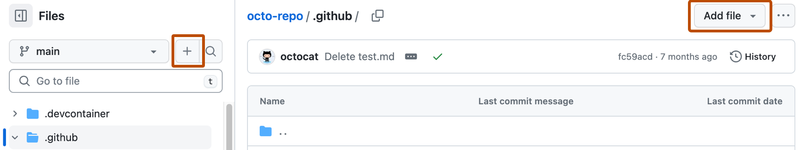
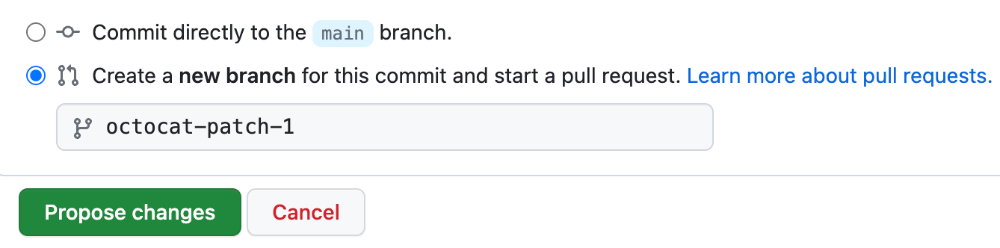

On GitHub, navigate to your site's repository.
Navigate to the publishing source for your site. For more information, see Configuring a publishing source for your GitHub Pages site.
Above the list of files, select the Add file dropdown menu, then click Create new file.
Alternatively, you can click in the file tree view on the left.

In the file name field, type 404.html or 404.md.
If you named your file 404.md, add the following YAML front matter to the beginning of the file:
---
permalink: /404.html
---
Below the YAML front matter, if present, add the content you want to display on your 404 page.
Click Commit changes...
In the "Commit message" field, type a short, meaningful commit message that describes the change you made to the file. You can attribute the commit to more than one author in the commit message. For more information, see Creating a commit with multiple authors.
If you have more than one email address associated with your account on GitHub, click the email address drop-down menu and select the email address to use as the Git author email address. Only verified email addresses appear in this drop-down menu. If you enabled email address privacy, then a no-reply will be the default commit author email address. For more information about the exact form the no-reply email address can take, see Setting your commit email address.

Below the commit message fields, decide whether to add your commit to the current branch or to a new branch. If your current branch is the default branch, you should choose to create a new branch for your commit and then create a pull request. For more information, see Creating a pull request.

Click Commit changes or Propose changes.